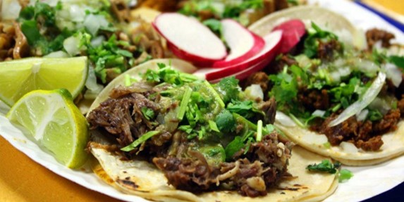
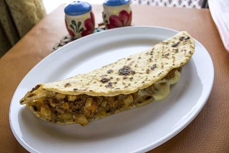
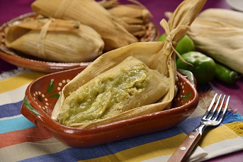

La gastronomía mexicana ha recogido influencias de la civilización azteca y maya en sus orígenes, y posteriormente de los españoles. Algunos de sus ingredientes claves son el maíz, el cilantro, los frijoles, el chile, el cacao, el aguacate o el jitomate. ¿Y qué decir de las salsas? Nunca probamos platos tan picantes como los de México (ni en India), aunque también se pueden comer platos poco o nada picantes, a los que ir añadiendo las salsas a tu gusto.
Los tacos son probablemente el plato mexicano más famoso internacionalmente, pero también dentro del país. ¡Y qué ricos están! Lo cierto es que hay decenas de tipos: tacos al pastor, de longaniza, de carnitas, de res, de suadero, de pescado, de chicharrón… Uff, de verdad que la lista es casi infinita. Se trata de unas tortillas de maíz, rellenas de un ingrediente principal, normalmente de carne, al que se añade al gusto todo lo que puedas imaginar. Se suelen servir de tres en tres, aunque en puestos callejeros se pueden vender por unidad (y muy baratos).
Las enchiladas son otro de los platos típicos de México. Y no te asustes por el nombre: sí, muchas son realmente en-chiladas y pican mucho, pero también hay versiones más piadosas para el paladar de europeos poco acostumbrados al picor. Algunas de las enchiladas más populares son:
Si te gustan la carne y el queso, las quesadillas serán uno de tus platos mexicanos favoritos. Son de fácil preparación: solo tienes que tomar una tortilla de maíz, rellenarla de los ingredientes elegidos, doblarla y prepararla a la plancha.
Los tamales se encuentran en muchos países de América, aunque parece que su origen es México ya que en el idioma náhuatl “tamalli” quiere decir “envuelto”. Y sí que están envueltos. Se trata de masa de maíz rellena de muchos ingredientes diferentes (normalmente carne, legumbres…) que se envuelven en hoja de maíz o plátano y se cocina al vapor o cocido en agua. ¡Es uno de nuestros desayunos mexicanos favoritos!
